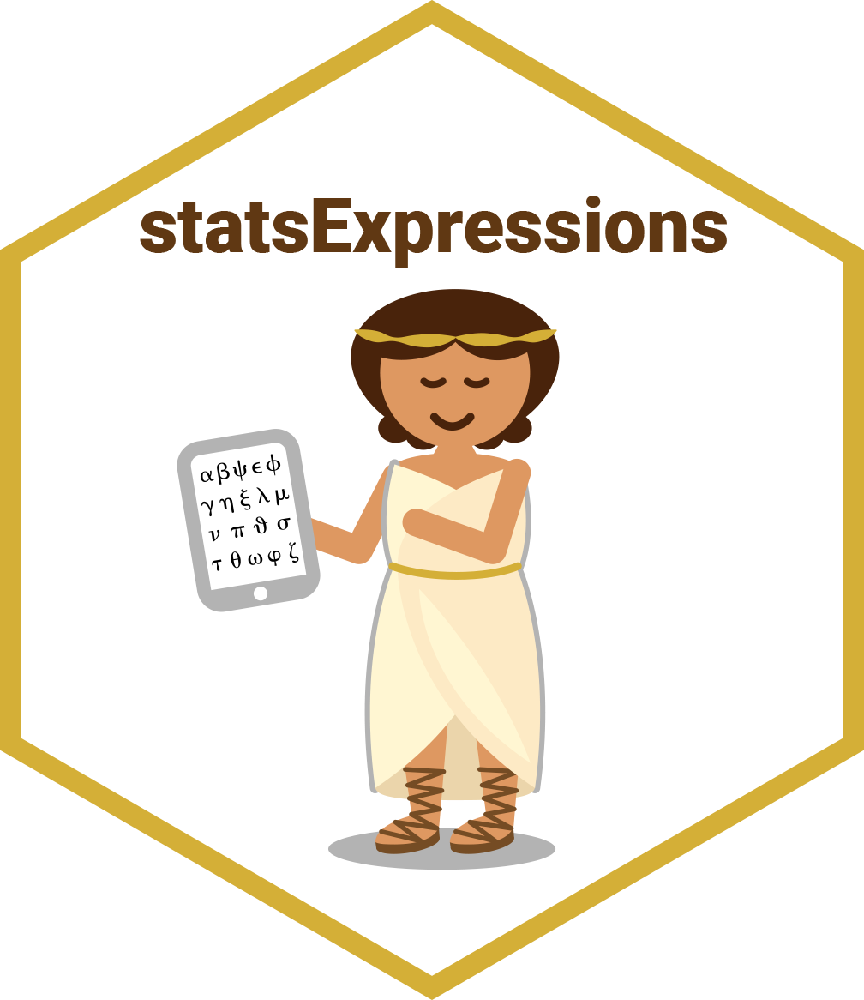

Pairwise contingency table analyses
Source:R/pairwise-contingency-table.R
pairwise_contingency_table.RdPairwise Fisher's exact tests as post hoc tests for contingency table analyses, with effect sizes (Cramer's V) and p-value adjustment for multiple comparisons.
Usage
pairwise_contingency_table(
data,
x,
y,
counts = NULL,
p.adjust.method = "holm",
digits = 2L,
conf.level = 0.95,
alternative = "two.sided",
...
)Arguments
- data
A data frame (or a tibble) from which variables specified are to be taken. Other data types (e.g., matrix,table, array, etc.) will not be accepted. Additionally, grouped data frames from
{dplyr}should be ungrouped before they are entered asdata.- x
The variable to use as the rows in the contingency table.
- y
The variable to use as the columns in the contingency table. Default is
NULL. IfNULL, one-sample proportion test (a goodness of fit test) will be run for thexvariable.- counts
The variable in data containing counts, or
NULLif each row represents a single observation.- p.adjust.method
Adjustment method for p-values for multiple comparisons. Possible methods are:
"holm"(default),"hochberg","hommel","bonferroni","BH","BY","fdr","none".- digits
Number of digits for rounding or significant figures. May also be
"signif"to return significant figures or"scientific"to return scientific notation. Control the number of digits by adding the value as suffix, e.g.digits = "scientific4"to have scientific notation with 4 decimal places, ordigits = "signif5"for 5 significant figures (see alsosignif()).- conf.level
Scalar between
0and1(default:95%confidence/credible intervals,0.95). IfNULL, no confidence intervals will be computed.- alternative
A character string specifying the alternative hypothesis; Controls the type of CI returned:
"two.sided"(default, two-sided CI),"greater"or"less"(one-sided CI). Partial matching is allowed (e.g.,"g","l","two"...). See section One-Sided CIs in the effectsize_CIs vignette.- ...
Additional arguments (currently ignored).
Value
The returned tibble data frame can contain some or all of the following columns (the exact columns will depend on the statistical test):
statistic: the numeric value of a statisticdf: the numeric value of a parameter being modeled (often degrees of freedom for the test)df.erroranddf: relevant only if the statistic in question has two degrees of freedom (e.g. anova)p.value: the two-sided p-value associated with the observed statisticmethod: the name of the inferential statistical testestimate: estimated value of the effect sizeconf.low: lower bound for the effect size estimateconf.high: upper bound for the effect size estimateconf.level: width of the confidence intervalconf.method: method used to compute confidence intervalconf.distribution: statistical distribution for the effecteffectsize: the name of the effect sizen.obs: number of observationsexpression: pre-formatted expression containing statistical details
For examples, see data frame output vignette.
Pairwise contingency table tests
The table below provides summary about:
statistical test carried out for inferential statistics
type of effect size estimate and a measure of uncertainty for this estimate
functions used internally to compute these details
Hypothesis testing
| Test | p-value adjustment? | Function used |
| Fisher's exact test | Yes | stats::fisher.test() |
Effect size estimation
| Effect size | CI available? | Function used |
| Cramer's V | Yes | effectsize::cramers_v() |
Citation
Patil, I., (2021). statsExpressions: R Package for Tidy Dataframes and Expressions with Statistical Details. Journal of Open Source Software, 6(61), 3236, https://doi.org/10.21105/joss.03236
Examples
# for reproducibility
set.seed(123)
library(statsExpressions)
# pairwise Fisher's exact tests with Holm adjustment
pairwise_contingency_table(
data = mtcars,
x = cyl,
y = am,
p.adjust.method = "holm"
)
#> # A tibble: 3 × 14
#> group1 group2 p.value p.value.adj estimate conf.level conf.low conf.high
#> <chr> <chr> <dbl> <dbl> <dbl> <dbl> <dbl> <dbl>
#> 1 4 6 0.332 0.560 0.180 0.95 0 0.743
#> 2 4 8 0.00514 0.0154 0.568 0.95 0 0.983
#> 3 6 8 0.280 0.560 0.229 0.95 0 0.728
#> effectsize conf.method conf.distribution p.adjust.method
#> <chr> <chr> <chr> <chr>
#> 1 Cramer's V (adj.) ncp chisq Holm
#> 2 Cramer's V (adj.) ncp chisq Holm
#> 3 Cramer's V (adj.) ncp chisq Holm
#> test expression
#> <chr> <list>
#> 1 Fisher's exact test <language>
#> 2 Fisher's exact test <language>
#> 3 Fisher's exact test <language>
# with counts data and Bonferroni adjustment
pairwise_contingency_table(
data = as.data.frame(Titanic),
x = Class,
y = Survived,
counts = Freq,
p.adjust.method = "bonferroni"
)
#> # A tibble: 6 × 14
#> group1 group2 p.value p.value.adj estimate conf.level conf.low conf.high
#> <chr> <chr> <dbl> <dbl> <dbl> <dbl> <dbl> <dbl>
#> 1 1st 2nd 2.78e- 7 1.67e- 6 0.207 0.95 0.125 0.287
#> 2 1st 3rd 3.68e-30 2.21e-29 0.357 0.95 0.296 0.419
#> 3 1st Crew 1.81e-34 1.09e-33 0.359 0.95 0.302 0.415
#> 4 2nd 3rd 8.19e- 7 4.91e- 6 0.157 0.95 0.0926 0.220
#> 5 2nd Crew 2.77e- 8 1.66e- 7 0.164 0.95 0.105 0.222
#> 6 3rd Crew 5.98e- 1 1 e+ 0 0 0.95 0 0.0581
#> effectsize conf.method conf.distribution p.adjust.method
#> <chr> <chr> <chr> <chr>
#> 1 Cramer's V (adj.) ncp chisq Bonferroni
#> 2 Cramer's V (adj.) ncp chisq Bonferroni
#> 3 Cramer's V (adj.) ncp chisq Bonferroni
#> 4 Cramer's V (adj.) ncp chisq Bonferroni
#> 5 Cramer's V (adj.) ncp chisq Bonferroni
#> 6 Cramer's V (adj.) ncp chisq Bonferroni
#> test expression
#> <chr> <list>
#> 1 Fisher's exact test <language>
#> 2 Fisher's exact test <language>
#> 3 Fisher's exact test <language>
#> 4 Fisher's exact test <language>
#> 5 Fisher's exact test <language>
#> 6 Fisher's exact test <language>
# no p-value adjustment
pairwise_contingency_table(
data = mtcars,
x = cyl,
y = am,
p.adjust.method = "none"
)
#> # A tibble: 3 × 14
#> group1 group2 p.value p.value.adj estimate conf.level conf.low conf.high
#> <chr> <chr> <dbl> <dbl> <dbl> <dbl> <dbl> <dbl>
#> 1 4 6 0.332 0.332 0.180 0.95 0 0.743
#> 2 4 8 0.00514 0.00514 0.568 0.95 0 0.983
#> 3 6 8 0.280 0.280 0.229 0.95 0 0.728
#> effectsize conf.method conf.distribution p.adjust.method
#> <chr> <chr> <chr> <chr>
#> 1 Cramer's V (adj.) ncp chisq None
#> 2 Cramer's V (adj.) ncp chisq None
#> 3 Cramer's V (adj.) ncp chisq None
#> test expression
#> <chr> <list>
#> 1 Fisher's exact test <language>
#> 2 Fisher's exact test <language>
#> 3 Fisher's exact test <language>